Aracaju
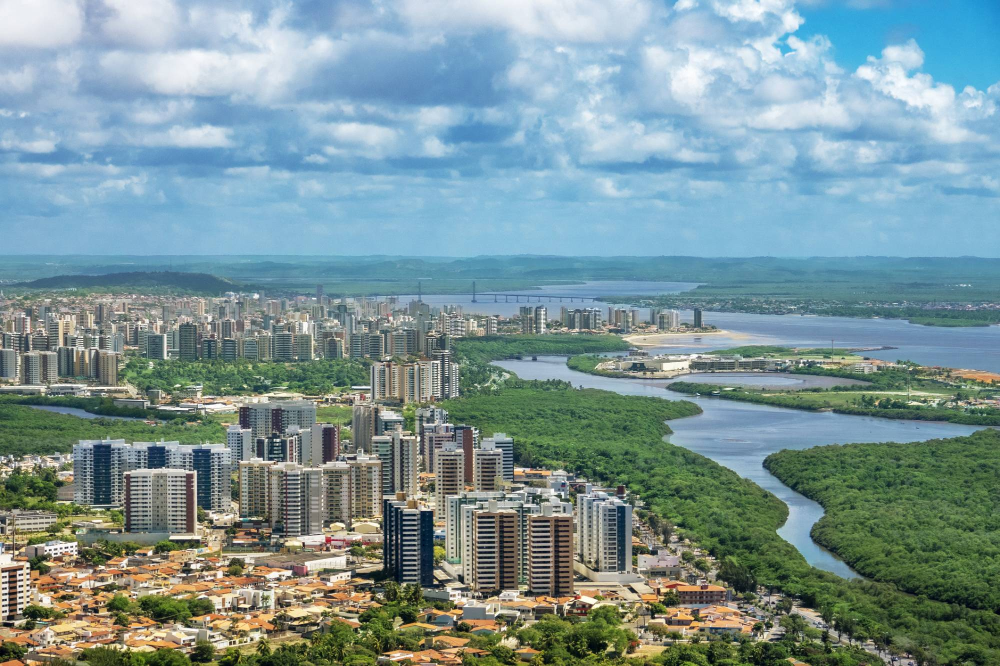Aracaju, a capital do estado de Sergipe, é um destino turístico que se destaca por suas praias tranquilas, rica história cultural e excelente infraestrutura para receber turistas. Situada entre o mar e o Rio Sergipe, Aracaju é uma cidade que combina belezas naturais com um ambiente urbano acolhedor. Conhecida por suas praias de águas mornas e calmas, como a Praia do Atalaia, a cidade também oferece uma rica gastronomia, com destaque para frutos do mar, e uma vida cultural vibrante, com manifestações artísticas, festas e festivais típicos do Nordeste brasileiro. Aracaju é famosa pela sua segurança, hospitalidade e pelo clima ameno, o que a torna uma ótima opção tanto para quem busca lazer quanto para quem quer explorar a história e a cultura local.
A cidade também serve como base para explorar o interior de Sergipe e outras atrações turísticas do estado, como o Cânion do Xingó e o Parque Nacional da Serra de Itabaiana.
Principais pontos turísticos
- Praia de Atalaia 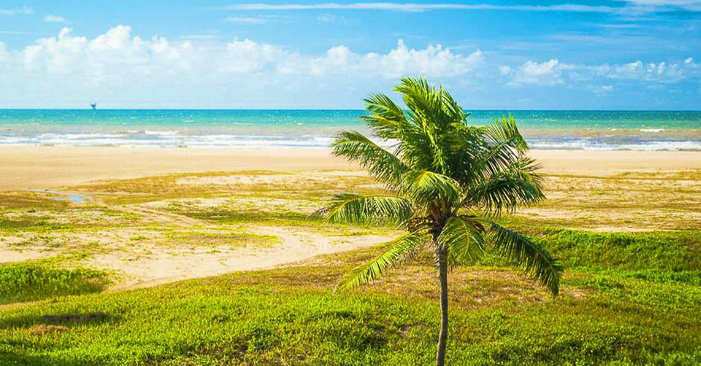
- Orla de Atalaia 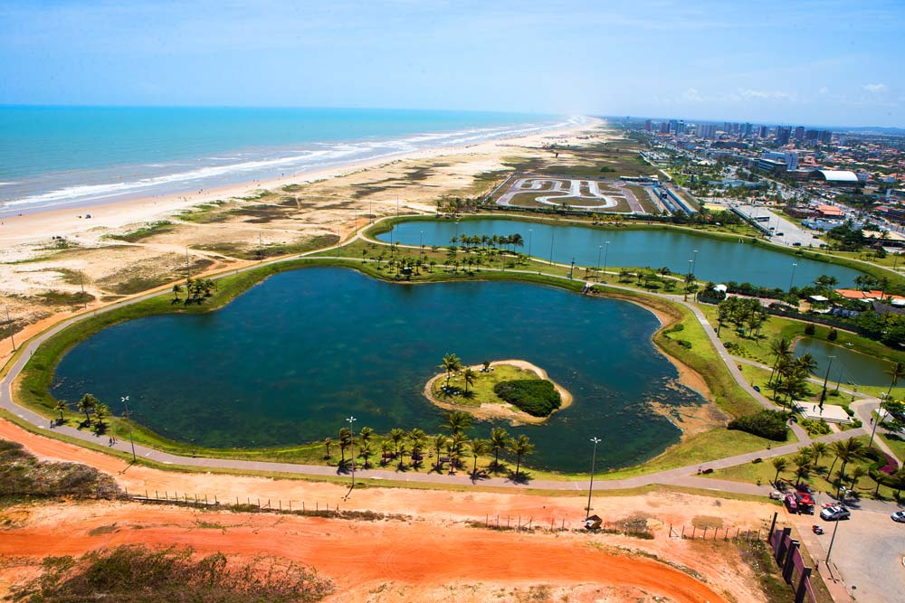
- Mercado Municipal Antônio Franco 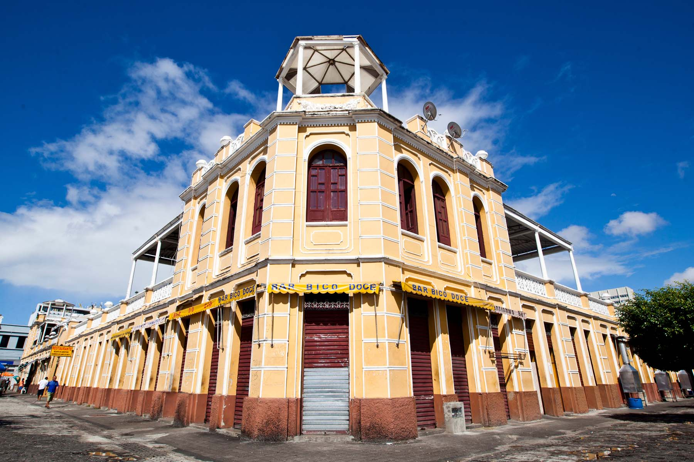
- Praia de Aruana 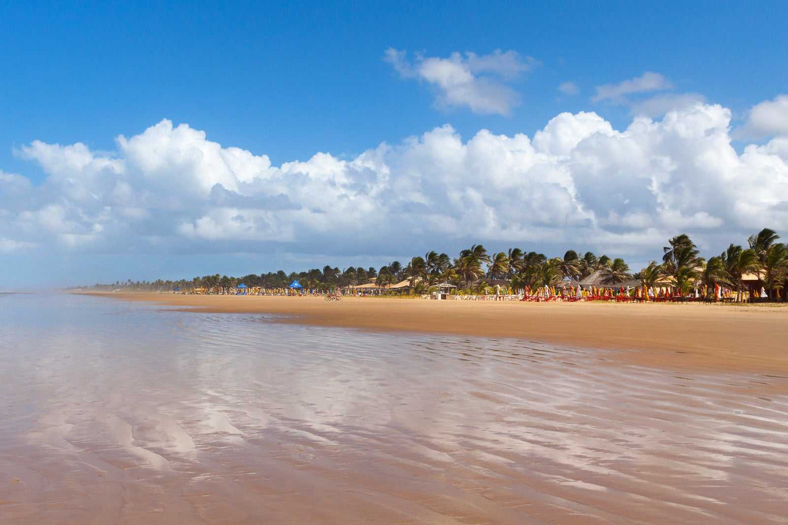
- Praia dos Artistas 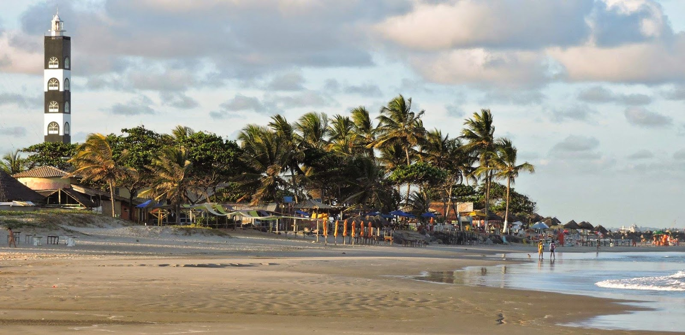
A Praia de Atalaia é a mais famosa de Aracaju e uma das mais visitadas do estado. Com uma extensa faixa de areia, águas tranquilas e uma excelente infraestrutura de bares, restaurantes e quiosques, é o local perfeito para quem deseja relaxar ou praticar esportes como o stand-up paddle e o kite surf. A área também conta com o Calçadão de Atalaia, ideal para caminhadas e passeios de bicicleta, e com o Oceanário de Aracaju, que exibe diversas espécies marinhas.
A Orla de Atalaia é uma das áreas mais movimentadas da cidade, com uma vista panorâmica do mar e diversas opções de lazer. A orla é famosa por sua beleza natural, com várias praças e áreas verdes, como o Parque Ministro João Alves Filho, além de uma vida noturna vibrante. A orla também é o palco de diversos eventos culturais e festas, como o Festival de Verão de Aracaju.
O Mercado Municipal Antônio Franco é um importante centro comercial e cultural de Aracaju. Localizado no centro da cidade, o mercado oferece uma variedade de produtos regionais, como artesanato, frutas tropicais e especiarias. É o lugar ideal para conhecer mais sobre a cultura sergipana e comprar souvenirs típicos, como a renda de bilro e a cerâmica local.
Uma das queridinhas de Aracaju, a Praia de Aruana tem uma faixa de areia larga e comprida, ideal para crianças e quem gosta de praticar esportes na areia. Embora o mar tenha ondas, elas são tranquilas e nada que atrapalhe um bom banho.
A praia tem infraestrutura muito boa, com quiosques e barracas que disponibilizam cadeiras e guarda-sóis para clientes. Como fica perto de Atalaia, a principal orla da cidade, a Praia de Aruana costuma lotar nos fins de semana e feriados. Então, vale chegar cedo para escolher um lugar bom e curtir a paisagem.
A Praia dos Artistas é mais procurada pelo visual, que é perfeito para fotos, ainda mais no pôr do sol. Como o mar tem ondas violentas, o local não é recomendado para banhos ou para quem está com crianças.
Pegue uma sombra nos quiosques e restaurantes da praia para pedir um tira-gosto e tomar um drinque ou uma cervejinha gelada. Aproveite também para caminhar na areia e tirar fotos com a cidade de Aracaju no horizonte ou o Farol da Orla de Atalaia ao fundo.
Principais pontos gastronômicos
- Feira de São Cristóvão 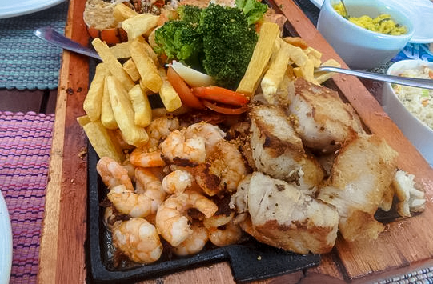
- Localização: Orla de Atalaia.
- Calles Bar de Tapas 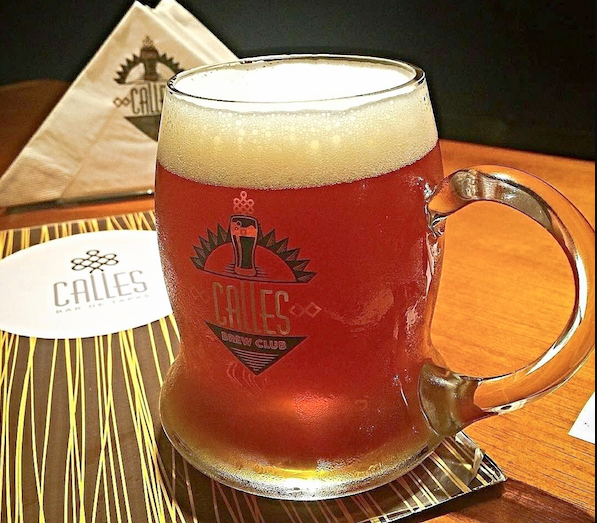
- Localização: Orla de Atalaia.
- Bar Paraty 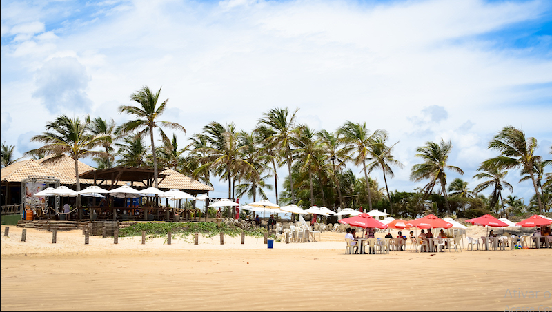
- Localização: Praia de Aruana.
- Dunas Beach 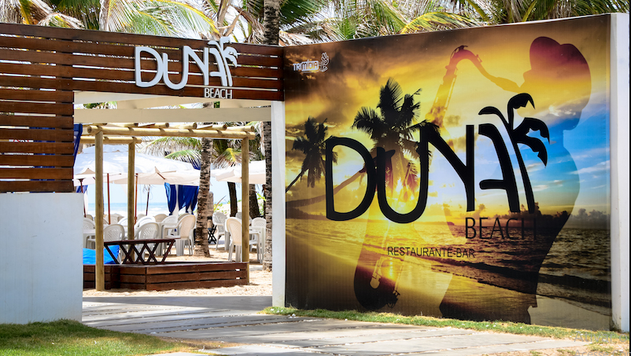
- Localização: Mosqueiro.
O Bada Grill é um dos principais entre os bares da Passarela do Caranguejo. Um dos preferidos entre os próprios sergipanos, e que cai perfeitamente no gosto do turista. O Bada tem uma energia muito boa, desde a sua estrutura e decoração toda voltada à cultura do estado, como nas boas noites de som que ele proporciona. Geralmente uma MPB, ou Pop Rock, mas aos domingos, bem no começo da tarde, é o samba raiz que comanda a animação do bar.
O cardápio é excelente. A famosa chapa com frutos do mar, que serve um polvo maravilhoso, para quem gosta, é de dar água na boca! É conhecida como Chapa Mista com Quatro Frutos do Mar. O cliente escolhe 4 dos 6 tipos oferecido no restaurante: peixe, polvo, lula, camarão, salmão e lagosta.
O Calles Bar de Tapas oferece uma grande e excelente variedade de cervejas artesanais, com aproximadamente 85 rótulos de cervejas nacionais e internacionais. O bar tem dois ambientes: na parte superior é o que eles chamam de Calles Bar de Tapas, com um ambiente mais tranquilo e mais formal. A segunda parte é conhecida por Calles Brew Club, onde a cerveja está mais presente, em um ambiente muito mais descontraído. No espaço Calles Brew Club tem um equipamento chamado My Beer, que é para a produção de cervejas e alguns chopps. Se o cliente quiser fabricar sua própria cerveja, pode agendar um dia e acertar como será feita essa produção.
Além da variedade de cervejas artesanais, nesse lado do bar pode-se optar por hambúrgueres ou hotdogs gourmets que são servidos.
O Bar Paraty é para ser curtido durante um belo dia de sol, e é um dos mais frequentados na região. O Paraty é referência por ter uma estrutura fantástica em se tratando de bares do calçadão da praia, e também por oferecer mais opções de entretenimento, com espreguiçadeiras e playground. Tem um deck bonito de madeira, e os quiosques são feitos de palha, o que deixa o ambiente bonito de se ver, além de várias mesas a beira do tranquilo litoral.
No cardápio do Paraty encontra-se de tudo um pouco, desde caranguejo, pasteis, peixes, caldinhos de frutos do mar e batata frita, a uma série de comidas deliciosas que tem o sabor nordestino.
O Dunas Beach é um bar com um charme todo peculiar, inaugurado recentemente em Aracaju por um casal de italianos. O ambiente realmente chama bastante atenção pela decoração despojada, moderna e com um toque que integra a natureza local. Os coqueiros espalhados ao redor, dá uma excelente sensação de tranquilidade para passar muitas horas curtindo o sol, e depois do almoço ainda relaxar sentindo a brisa do mar. Inclusive, tem até algumas redes amarradas em coqueiros para quem quer realmente descansar.
Por ser administrado por italianos, no cardápio do Dunas Beach encontra-se uma variação mista de comidas italianas e brasileiras. Por exemplo, há o Nhoque com frutos do mar, onde foi possível misturar as duas culturas culinárias.
Principais pontos culturais
- Cultura do Forró 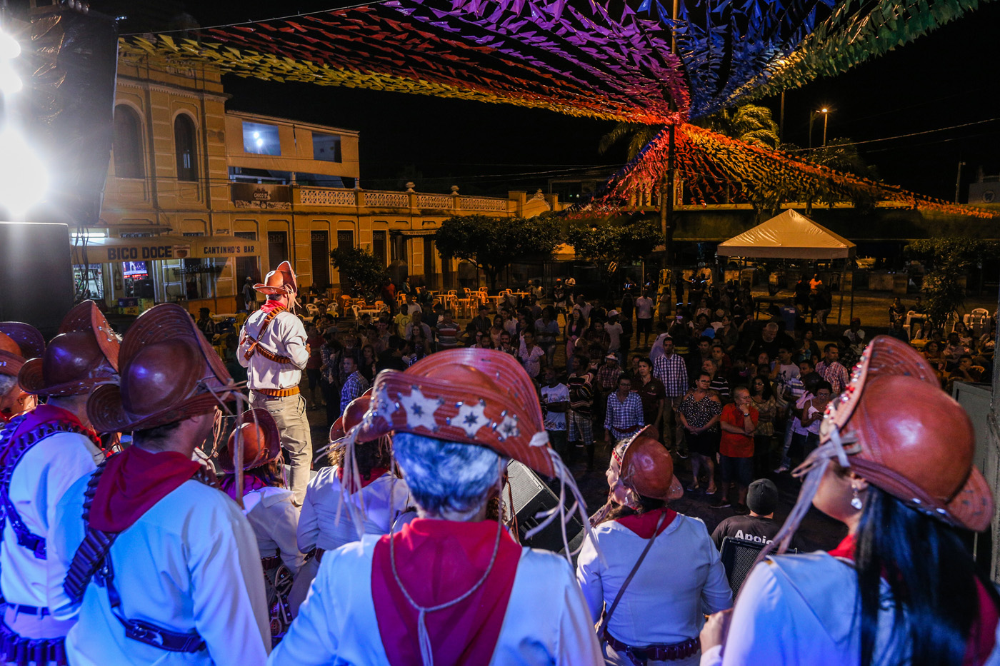
- Localização: Por toda a cidade.
- Festival de Verão de Aracaju 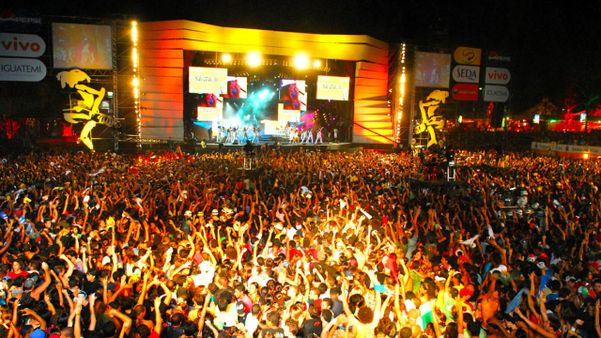
- Localização: Orla de Atalaia.
- Teatro Tobias Barreto 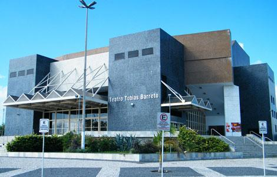
- Localização: Bairro Inácio Barbosa.
- Palácio Museu Olímpio Campos 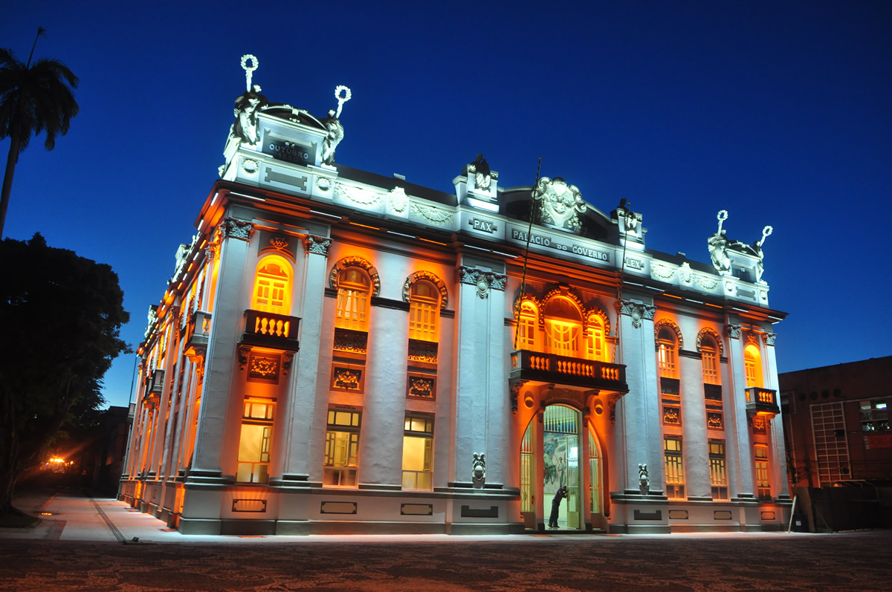
- Localização: Centro da cidade.
- Igreja de Nossa Senhora do Socorro 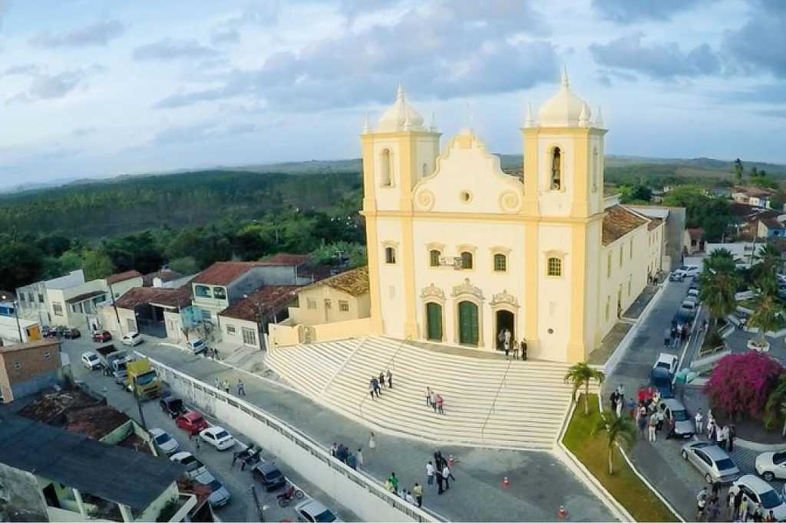
- Localização: Centro da cidade.
O forró é um dos ritmos mais tradicionais de Aracaju e de todo o Nordeste. A cidade possui diversas casas de show e bares que promovem apresentações ao vivo de forró e outros ritmos locais. Durante o São João, a cidade se enche de festas e danças típicas, com destaque para o Arraiá do Povo, realizado no mês de junho, uma das maiores festividades de Aracaju.
O Festival de Verão de Aracaju é um evento musical de grande porte que ocorre anualmente na cidade. Com shows de artistas nacionais e locais, o festival reúne milhares de pessoas e é uma excelente forma de conhecer a música e a cultura sergipana. O evento acontece na Orla de Atalaia e conta com diversas atrações de música popular brasileira, rock, reggae e ritmos nordestinos.
O Teatro Tobias Barreto é um dos principais centros culturais de Aracaju, com uma programação variada que inclui apresentações de teatro, dança, música e outras manifestações artísticas. O teatro é um ponto de encontro para quem deseja conhecer o melhor da arte local e nacional.
O Palácio Museu Olímpio Campos é um edifício histórico que abriga o Museu Palácio Olímpio Campos, com exposições que retratam a história e a cultura de Sergipe. Localizado no centro de Aracaju, o museu oferece aos visitantes uma imersão na história política, social e cultural de Sergipe.
A Igreja de Nossa Senhora do Socorro é uma das igrejas mais importantes de Aracaju. Com sua arquitetura barroca, a igreja é um símbolo da religiosidade e da história da cidade. É um ponto de culto e também de interesse histórico e cultural.